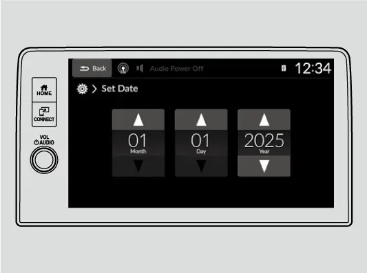

קאפיטל 26
באהאלטענע און ווייניג-באקאנטע פיטשורס
זייטן 387–397 אינעם PDF
דער Vehicle settings מעניו: וואו די באהאלטענע פונקציעס געפינען זיך
רוב פון די ווייניגער באקאנטע פונקציעס פונעם CR-V EX געפינען זיך אויף איין ארט: דער Vehicle settings סקרין (דער קאר-איינשטעלונגען סקרין) אינעם 7-אינטש מיטער דיספליי, וואס דער אונער'ס מאנואל רופט A-type meter (דער A-טיפ מעטער). דער מעניו עפנט זיך נאר ווען דריי באדינגונגען זענען דא. דער Power מאדָע מוז זיין ON, דער קאר מוז שטיין אינגאנצן, און דער שיפט לעווער מוז זיין אין P. דריקט דעם home קנעפל (היים-קנעפל) אויפן שטייער-ראד, דרייט דאס לינקע ראדל ביז צום settings סקרין, און דריקט דאס ראדל. אויב דער מעניו וויל זיך נישט עפענען, טשעקט ערשט אז איר זענט אין Park.
דער גרונט-מוסטער: טוישן ווען Trip A ווערט צוריקגעשטעלט
דער מאנואל ניצט איין ביישפיל צו ווייזן דעם מוסטער וואס ארבעט פאר יעדע איינשטעלונג אינעם מעניו. ווען איר האט דאס איינמאל געטון, קענט איר טוישן יעדע זאך.
טוישן ווען "Trip A" ווערט צוריקגעשטעלט (ביישפיל פאר יעדע איינשטעלונג)
- דריקט דעם home קנעפל און דרייט דאס לינקע ראדל ביז צום settings סקרין, דערנאך דריקט דאס לינקע ראדל.
- דרייט דאס לינקע ראדל ביז Meter setup (מעטער איינשטעלונגען) קומט ארויף, דערנאך דריקט דאס ראדל.
- דרייט ביז "Trip A" reset timing (ווען Trip A ווערט צוריקגעשטעלט) קומט ארויף, דערנאך דריקט דאס ראדל.
- קלייבט אויס פון די פיר אפציעס וואס ווערן געוויזן: When fully refueled (ווען מען פילט אן פול), IGN OFF (ווען מען לעשט אויס דעם קאר), Manually reset (מיט דער האנט), אדער Back (צוריק).
- דרייט צו דער אפציע וואס איר ווילט און דריקט דאס ראדל; דער דיספליי קערט זיך אום צום customization מעניו.
- כדי ארויסצוגיין, דרייט צו Back און דריקט דאס ראדל, און טוט עס נאכאמאל ביז איר קומט צום געווענליכן סקרין.
פון דער פאבריק איז Trip A reset timing געשטעלט אויף Manually reset.
ווי אזוי דער מעניו איז אויסגעשטעלט
דער מעניו איז צעטיילט אין setup גרופעס. דער קאפיטל באהאנדלט די פיר גרופעס וואו די באקוועמלעכקייט-פונקציעס זענען באהאלטן: Meter setup, Keyless access setup (שליסל-לאזע אריינגאנג(, Lighting setup)לייכטן(און Door setup)טירן). די אנדערע גרופעס ווערן באהאנדלט אין אנדערע ערטער.
Vehicle settings גרופעס אויפן EX
| גרופע | וואס זי האט | וואו עס ווערט באהאנדלט |
|---|---|---|
| Driver assist system setup | Honda Sensing איינשטעלונגען | קאפיטל 9 |
| Meter setup | טריפס, איינהייטן, וואליום, דיספליי | דער קאפיטל |
| Keyless access setup | ווי Smart Entry פירט זיך | דער קאפיטל |
| Lighting setup | ווען די דרויסנדיגע און אינעווייניגע לייכטן צינדן זיך און לעשן זיך | דער קאפיטל |
| Door setup | לאקן, פענצטער | דער קאפיטל |
| Maintenance reset | Maintenance Minder צוריקשטעלן | קאפיטל 19 |
| Default all | צוריקשטעלן די פאבריק איינשטעלונגען | דער קאפיטל |
די לעצטע זאך, Default all (אלעס צוריק צו פאבריק), גיט Cancel אדער Set. אויב מען קלייבט Set, ווערן אלע ענדערונגען וואס איר האט געמאכט בטל, און די פאבריק איינשטעלונגען קומען צוריק. דאס איז נוצלעך ווען עפעס איז געטוישט געווארן און קיינער געדענקט נישט וואס.
מעטער טריקס
צוויי טריפ מעטערס, צוויי ארבעטן
אויפן Range/Fuel/Trip Meter סקרין (ווייטקייט/ בענזין/ טריפ), אז מען דרייט דאס לינקע ראדל, וועקסלט מען צווישן טריפ מעטער A און טריפ מעטער B. אזוי קען מען נאכגיין צוויי באזונדערע זאכן, למשל איין לאנגע נסיעה און א גאנצן חודש. יעדער טריפ מעטער האלט זיין אייגענעם דורכשניטליכן בענזין-פארברויך אין mpg, וואס ווערט דערהיינטיגט יעדע געוויסע צייט, און אז מען שטעלט צוריק דעם טריפ, ווערט אויך דער דורכשניט צוריקגעשטעלט. כדי צוריקצושטעלן, ווייזט דעם טריפ, דריקט דאס לינקע ראדל, און קלייבט Reset. דער טריפ גייט צוריק צו 0.0. דער זעלבער סקרין ווייזט דעם אויגנבליקליכן בענזין-פארברויך ווי א בער-גראף, און די געשאצטע ווייטקייט וואס מען קען נאך פארן. די ווייטקייט איז באזירט אויפן יעצטיגן פארברויך און איז נאר א שאצונג.
דער Speed/Time/Trip Meter סקרין (גיכקייט/ צייט/ טריפ) לייגט צו די צייט וואס איז דורך און די דורכשניטליכע גיכקייט זינט דעם לעצטן צוריקשטעלן. אלע פיר ווערטן — ווייטקייט, דורכשניטליכער פארברויך, דורכשניטליכע גיכקייט און צייט — גייען נאך דער reset timing איינשטעלונג פון יענעם טריפ. דאס מאכט מעגלעך צוויי נוצלעכע טריקס:
- שטעלט איין טריפ אויף IGN OFF. ער הייבט זיך אן פון פריש יעדעס מאל איר לעשט אויס דעם קאר, אזוי ווייזט ער שטענדיג נאר די יעצטיגע נסיעה.
- שטעלט דעם אנדערן טריפ אויף When fully refueled. איר באקומט דעם פארברויך פון יעדן טאנק באזונדער, אן קיינמאל דריקן reset (זעט קאפיטל 4).
דער "No content" קיצור-וועג: גלייך km/h
איינער פון די מעטער סקרינס האט אן אמת'ן קיצור-וועג. ער הייסט No content (אן אינהאלט). קלייבט אים אויס, דערנאך דריקט און האלט דאס לינקע ראדל. די גיכקייט און ווייטקייט איינהייטן טוישן זיך פון מייל און mph צו קילאמעטער און km/h, און א באשטעטיגונג סקרין קומט ארויף אויף עטליכע סעקונדעס. טוט עס נאכאמאל כדי צוריקצוטוישן. דאס איז באקוועם פאר א נסיעה קיין קאנאדע. די זעלבע ענדערונג איז אויך דא ווי Speed/distance units אין Meter setup. No content ווייזט אויך א בילד נאר מיטן טאכאמעטער (מאטאר דרייונגען), אפילו אויב איר האט באהאלטן דעם טאכאמעטער מיט דעם Tachometer פונקט אין Meter setup.
אנדערע Meter setup איינשטעלונגען
Meter setup פונקטן (EX, אמעריקע)
| פונקט | ברירות | פון דער פאבריק |
|---|---|---|
| Language selection (שפראך) | olñais / EspaçEnglish / Fran | English |
| Adjust outside temp. display (דרויסנדיגע טעמפעראטור קארעקטירן) | -5°F ביז +5°F | 0°F± |
| "Trip A" / "Trip B" reset timing | When fully refueled / IGN OFF / Manually reset | Manually reset |
| Adjust alarm volume (אלארם וואליום) | High / Mid / Low | Mid |
| Fuel efficiency backlight (בענזין-שפארן ליכט) | ON / OFF | ON |
| Rear seat reminder (הינטערשטע זיץ דערמאנונג) | ON / OFF | ON |
| Speed/distance units (גיכקייט/ ווייטקייט איינהייטן) | miles∙ km / mph ∙km/h | miles ∙mph |
| Tachometer (טאכאמעטער) | ON / OFF | ON |
אויב די דרויסנדיגע טעמפעראטור ווייזט שטענדיג פאלש, קענט איר זי קארעקטירן ביז 5 גראד פארענהייט אהער אדער אהין (3°C אויף קאנאדישע מאדעלן). איידער איר קארעקטירט, דארפט איר וויסן ווי דער סענסאר פירט זיך. ער זיצט אין פראנט באמפער. אונטער 19 mph (30 km/h) קען די היץ פונעם וועג און דער רויך פון אנדערע קארס אים באאיינפלוסן. נאכדעם וואס די ציפער האט זיך באזעצט, קען עס נעמען עטליכע מינוט ביז דער דיספליי דערהיינטיגט זיך. Adjust alarm volume שטעלט די באזערס, ווארענונגען און דעם קלאנג פונעם בלינקער. Fuel effci iency backlight צינדט אן אדער לעשט אויס די אמביענט ליכט-פונקציע פונעם מעטער.
אויסקלייבן וועלכע מעטער סקרינס ווערן געוויזן
איר קענט אויסקלייבן וועלכע סקרינס ווערן געוויזן ווען איר דרייט דורכן מעטער. קלייבט Gauge display settings (מעטער סקרין איינשטעלונגען) און דריקט דאס ראדל. דערנאך דרייט צווישן די אייקאנס און דריקט כדי צו צייכענען אדער אויסצומעקן יעדעס איינס. גרויע אייקאנס קען מען נישט אוועקנעמען. אז מען מעקט אויס סקרינס וואס מען ניצט קיינמאל נישט, קומט מען שנעלער צו די וואס מען ניצט יא. דער מאנואל זאגט צו שטעלן אין P ווען מען טוישט די איינשטעלונגען.

אויפן Brightness סקרין (ליכטיקייט), דריקט דאס ראדל. דרייט ארויף צו מאכן ליכטיגער אדער אראפ צו מאכן טונקעלער, און דריקט כדי ארויסצוגיין. דער מעטער שטעלט זיך אויך אליין לויט דער ליכט ארום, טונקעלער אין דער פינצטער און ליכטיגער אין שטארקער ליכט. ווען עס איז ליכטיג ארום קענט איר טוישן די איינשטעלונג, אבער מען וועט נישט זען קיין ענדערונג אין דער ליכטיקייט פונעם מעטער.
Smart Entry פרטים וואס רוב אונערס זעען נישט
וועלכער האנטל עפנט וואס
אז מען כאפט דעם דרייווער'ס טיר-האנטל, עפנט זיך נאר די דרייווער'ס טיר און דאס בענזין-טירל. אז מען כאפט דעם פארנטיגן פאסאזשיר'ס האנטל, עפענען זיך אלע טירן און דער טעילגעיט. אז מען דריקט דעם אויסערליכן האנטל פונעם טעילגעיט, עפנט זיך דער טעילגעיט. כדי דער דרייווער'ס האנטל זאל עפענען אלעס, טוישט Door unlock mode (טיר-עפענען מאדָע) אונטער Keyless access setup צו All doors. דער סיסטעם ארבעט ביז בערך 32 אינטשעס (80 cm) פון א דרויסנדיגן טיר-האנטל אדער פונעם טעילגעיט'ס אויסערליכן האנטל, און נאר ווען דער Power מאדָע איז אין VEHICLE OFF.
Keyless access setup
| פונקט | ברירות | פון דער פאבריק |
|---|---|---|
| Door unlock mode (טיר-עפענען מאדָע) | Driver door only / All doors | Driver door only |
| Keyless access light flash (לייכטן בלינקען) | ON / OFF | ON |
| Keyless access beep (ביפ) | ON / OFF | ON |
| Remote start system ON/OFF (רימאוט סטארט) | ON / OFF | ON |
דער מאנואל גיט עטליכע פרטים וועגן צייט און דעטעקציע:
- נאכן לאקן, ווארט כאטש 2 סעקונדעס איידער איר כאפט נאכאמאל דעם האנטל, אנדערש וועט די טיר זיך נישט עפענען. די 2 סעקונדעס לאזן אייך ציען דעם האנטל צו באשטעטיגן אז די טיר איז פארלאקט.
- אויב איר עפנט נישט קיין טיר אדער דעם טעילגעיט אין 30 סעקונדעס נאכן אנלאקן, לאקט זיך דער קאר צוריק.
- הענטשקעס קענען מאכן דעם האנטל-סענסאר פאמעלעך אדער אז ער רעאגירט נישט.
- דער פאב קען נישט ארבעטן אויב מען האלט אים העכער אדער נידעריגער פונעם האנטל, אדער גאר נאענט צו דער טיר אדער שויב.
- ווען דער פאב איז אין דער נאנט, קען א האנטל באדעקט מיט וואסער ביי שטארקן רעגן אדער אין א קאר וואש עפענען די טיר.
Walk Away Auto Lock
Walk Away Auto Lock (אויטאמאטיש לאקן ווען מען גייט אוועק) לאקט די טירן, דעם טעילגעיט און דאס בענזין-טירל ווען איר גייט אוועק מיטן פאב. דער מאנואל זאגט אז עס איז OFF פון דער פאבריק, אזוי דארפט איר עס אנצינדן אונטער Door setup. איין כאפ: נאר דער רימאוט וואס האט אנגעלאקט די דרייווער'ס טיר איידער איר האט געטוישט די איינשטעלונג, קען עס אקטיווירן.
ניצן Walk Away Auto Lock
- גייט ארויס מיטן פאב און מאכט צו אלע טירן און דעם טעילגעיט ווען איר זענט ביז בערך 5 פוס (1.5 m) ווייט.
- הערט דעם ביפ; auto lock איז יעצט גרייט.
- גייט ווייטער ווי בערך 5 פוס און בלייבט ווייט 2 סעקונדעס אדער מער.
- די דרויסנדיגע לייכטן בלינקען, דער ביפער קלינגט, און אלעס לאקט זיך.
אויב איר בלייבט שטיין לעבן דעם קאר נאכן גרייט-ביפ, לאקט ער זיך אליין אין בערך 30 סעקונדעס, און דאס לעמפל אויפן פאב בלינקט ווייטער ביז דאן. אז מען עפנט א טיר אדער דעם טעילגעיט נאכן ביפ, ווערט auto lock בטל. Auto lock ארבעט נישט אויב דער פאב איז אינעווייניג, אויב א טיר, דער טעילגעיט אדער די האוד איז אפן, אדער אויב דער Power מאדָע איז נישט OFF. א שטאפ-ביפער פון בערך צוויי סעקונדעס מיינט אז דער פאב איז אריין אינעווייניג, דורך א פענצטער אדער אינעם לאסט-פלאץ, אדער אז איר זענט צו נאענט. טשעקט אז איר האט דעם פאב, דערנאך עפנט און מאכט צו א טיר און באשטעטיגט אז עס קומט איין גרייט-ביפ.
כדי צו לאזן דעם קאר אפן אויף א שטיק צייט, למשל ווען מען טראגט אריין זאכן פון שטוב, קענט איר צייטווייליג אפשטעלן auto lock.
צייטווייליג אויסלעשן Walk Away Auto Lock
- שטעלט דעם Power מאדָע אויף OFF.
- עפנט די דרייווער'ס טיר.
- דריקט דעם מאסטער טיר-לאק סוויטש אין דעם סדר: lock, unlock, lock, unlock.
- דער ביפער קלינגט, און די פונקציע איז אויסגעלאשן.
כדי עס צוריקצוברענגען, רעכנט דער מאנואל אויס פיר שריט: שטעלט דעם Power מאדָע אויף ON, לאקט דעם קאר אן ניצן auto lock, גייט ארויס פונעם ראיאן מיטן פאב ביי זיך, און עפנט סיי וועלכע טיר.
Lock presetting
Lock presetting (פאראויס-לאקן) לאזט אייך לאקן פאראויס. ערשט מאכט צו די דרייווער'ס טיר. דערנאך רירט אן איר לאק-סענסאר, דריקט דעם טעילגעיט'ס לאק קנעפל, אדער דריקט lock אויפן פאב. א קלאנג באשטעטיגט אז presetting איז אקטיוו. יעצט מאכט צו די איבריגע טירן און דעם טעילגעיט. ווען די לעצטע מאכט זיך צו, בלינקען די דרויסנדיגע לייכטן, דער ביפער קלינגט און דער קאר לאקט זיך. אויב א טיר אדער דער טעילגעיט ווערט געעפנט איידער דאס לאקן איז פארטיג, ווערט presetting בטל. דער מאנואל זאגט צו מאכן זיכער אז אלעס איז פארלאקט איידער איר גייט אוועק, און צו טשעקן אז דער שליסל איז נישט אינעווייניג. Lock presetting איז ON פון דער פאבריק אונטער Door setup.
Lockout protection
אויב דער קאר קען נישט דעטעקטן דעם פאב ווען איר לאקט, קומט אריין lockout protection (שוץ פון זיך פארשליסן). א ביפער קלינגט, די דרויסנדיגע לייכטן בלינקען, די טירן עפענען זיך און א מעלדונג קומט ארויף, כדי איר זאלט קענען ארויסנעמען א פאב וואס איז געבליבן אינעווייניג. אויב קיין טיר ווערט נישט געעפנט, לאקט זיך אלעס צוריק נאך 15 סעקונדעס. כדי אויסצומיידן דעטעקציע פראבלעמען, האלט דעם פאב ווייט פון סעל פאונס, אריינגערעכנט אייער Pixel 9a, און אנדערע מכשירים וואס קענען שטערן דעם סיגנאל.
פענצטער, מונרוף און רימאוט סטארט
לופטערן דעם קאר פונעם פאב
אויף א הייסן טאג קענט איר אויסלופטערן דעם קאר איידער איר גייט אריין. דריקט unlock אויפן פאב, דערנאך אין 10 סעקונדעס דריקט עס נאכאמאל און האלט. די פענצטער גייען אראפ. אויף מאדעלן מיט א מונרוף, אריינגערעכנט דער EX, עפנט זיך דער מונרוף צוזאמען מיט זיי. אויב די פענצטער שטעלן זיך אפ אין מיטן, טוט די שריט נאכאמאל. די איינשטעלונג הייסט Keyless remote power window control (פענצטער פונעם רימאוט) אונטער Door setup, ON פון דער פאבריק. דער מאנואל באשרייבט נאר עפענען, נישט פארמאכן פונעם פאב.
Auto up/down און די 10-מינוט צייט
דער EX האט auto up און down (אויטאמאטיש ארויף און אראפ) אויף ביידע פארנטיגע פענצטער. שטופט אדער ציט דעם סוויטש שטארק, און דער פענצטער גייט אינגאנצן. שטופט אדער ציט קורץ כדי אים אפצושטעלן. א לייכטער שטופ אדער ציי, געהאלטן, באוועגט דעם פענצטער נאר אזוי ווייט ווי איר ווילט. אויב א פענצטער וואס מאכט זיך אויטאמאטיש צו שפירט א ווידערשטאנד, שטעלט ער זיך אפ און גייט צוריק. צוויי אויסנאמען: די auto-reverse הערט אויף צו שפירן ווען דער פענצטער איז כמעט צו, און די auto-reverse פונעם דרייווער'ס פענצטער ארבעט נישט ווען איר האלט ווייטער ציען דעם סוויטש ארויף.
ווייניג מענטשן באמערקן אז די פענצטער ארבעטן נאך ביז 10 מינוט נאכדעם וואס איר שטעלט דעם Power מאדָע אויף VEHICLE OFF, אזוי קענט איר פארמאכן איינעם וואס איר האט פארגעסן. אז מען עפנט איינע פון די פארנטיגע טירן, ענדיגט זיך די צייט. אויב איין אפענער פענצטער מאכט א בומענדיגן אדער קלאפנדיגן קלאנג, וואס הייסט wind buffeting (ווינט-קלאפן), לאזט אביסל אראפ די אנדערע פענצטער אדער עפנט דעם מונרוף.
מונרוף tilt
דער מונרוף סוויטש איז פארנט אויף דער סטעליע. ציט אים צוריק שטארק, און דער מונרוף עפנט זיך אינגאנצן. שטופט אים פאראויס שטארק, און ער מאכט זיך אינגאנצן צו. א קורצער טאפ שטעלט אים אפ אין מיטן, און א לייכטער, געהאלטענער ריר באוועגט אים צו סיי וועלכע פאזיציע. דער ווייניגער באקאנטער טייל איז tilt (אויפהייבן שיף). שטופט די מיטן פונעם סוויטש, און די שויב הייבט זיך אויף שיף פאר פרישע לופט. כדי צוצומאכן פון tilt, שטופט פאראויס שטארק און לאזט אפ. די זעלבע 10-מינוט צייט נאך VEHICLE OFF גילט אויך דא, און דער מונרוף גייט אויך צוריק אויב ער טרעפט א ווידערשטאנד.
רימאוט סטארט: די פארגעסענע פרטים
קאפיטל 21 באהאנדלט רימאוט סטארט, אזוי דא זענען נאר די פרטים וואס אונערס פארגעסן געווענליך. Honda'ס פיטשער גייד זאגט אז עס ארבעט ביז בערך 100 פוס. דריקט LOCK אויפן פאב, דערנאך דריקט און האלט דעם engine start קנעפל כאטש א סעקונדע. די קליימעט קאנטראל הייבט אן צו ברענגען דעם קאר צו 72°F. עפנט און גייט אריין אין קאר ווי געווענליך מיטן פאב ביי זיך, און דער מאטאר לויפט ווייטער. כדי צו פארן, דריקט דעם ברעמז און דריקט ENGINE START איינמאל. Keyless access setup האט א Remote start system ON/OFF פונקט, ON פון דער פאבריק.
אויטאמאטיש לאקן און לייכטן
Door setup
Door setup פונקטן
| פונקט | ברירות | פון דער פאבריק |
|---|---|---|
| Auto door lock (אויטאמאטיש טירן לאקן) | With vehicle speed / Shift from P / OFF | With vehicle speed |
| Auto door unlock (אויטאמאטיש טירן עפענען) | Driver's door opens / Shifted to Park / Ignition OFF / OFF | Driver's door opens |
| Walk away auto lock | ON / OFF | OFF |
| Keyless lock answer back (ענטפער ביים לאקן) | ON / OFF | ON |
| Keyless remote power window control | ON / OFF | ON |
| Lockout prevention (שוץ פון פארשליסן) | ON / OFF | ON |
| Lock presetting | ON / OFF | ON |
פון דער פאבריק לאקן זיך די טירן און דער טעילגעיט אליין ביי בערך 10 mph (15 km/h). איר קענט דאס טוישן צו Shift from P (ווען מען שיפט ארויס פון P) אדער עס אויסלעשן. Auto door unlock עפנט געווענליך אלע טירן ווען די דרייווער'ס טיר עפנט זיך. Keyless lock answer back בלינקט די דרויסנדיגע לייכטן ווען איר לאקט און עפנט מיטן פאב. אויפן פאב, א צווייטער lock דריק אין פינף סעקונדעס קלינגט דעם ביפער צו באשטעטיגן אז דער זיכערהייט סיסטעם איז געשטעלט. איין unlock דריק עפנט די דרייווער'ס טיר און דאס בענזין-טירל, און א צווייטער דריק עפנט די איבריגע.
Lighting setup
Lighting setup פונקטן
| פונקט | ברירות | פון דער פאבריק |
|---|---|---|
| Auto high-beam (אויטאמאטישע הויכע ליכט) | ON / OFF | ON |
| Interior light dimming time (ווען די אינעווייניגע לייכטן ווערן טונקל) | 60 / 30 / 15 sec | 30 sec |
| Headlight auto off timer (ווען די העדלייטס לעשן זיך) | 60 / 30 / 15 / 0 sec | 15 sec |
| פונקט | ברירות | פון דער פאבריק |
|---|---|---|
| Auto light sensitivity (נישט אויף אלע מאדעלן) | Max / High / Mid / Low / Min | Mid |
| Auto headlight ON with wiper ON (לייכטן מיט די ווייפערס) | ON / OFF | ON |
קאפיטל 11 באהאנדלט דעם ליכט-שאלטער אליין. ווען דער שאלטער איז אין AUTO נאך פינצטער, צינדן זיך די העדלייטס און פארקינג לייכטן אן ווען איר עפנט א טיר, כדי צו באלייכטן אייער וועג, און לעשן זיך ווען איר לאקט. ווען איר גייט אוועק, בלייבן די לייכטן אן א קורצע צייט נאכדעם וואס איר מאכט צו די דרייווער'ס טיר. דער Headlight auto off timer שטעלט ווי לאנג. אויב איר לעשט אויס דעם קאר מיט די העדלייטס אן אבער עפנט נישט די טיר, לעשן זיי זיך נאך 10 מינוט, אדער נאך 3 מינוט אין AUTO. אויב דער שאלטער איז געבליבן אן און נישט אין AUTO, קלינגט א ביפער ווען די דרייווער'ס טיר עפנט זיך ווען דער קאר איז אויסגעלאשן.
דעקט נישט צו דעם ליכט-סענסאר וואס ווערט געוויזן אויפן בילד, אנדערש קענען די אויטאמאטישע לייכטן נישט ארבעטן ריכטיג. אמעריקאנער מאדעלן ווייזן Auto light sensitivity (ליכט-סענסאר שטארקייט), באצייכנט ווי נישט אויף אלע מאדעלן, אזוי טשעקט צי אייער מעניו ווייזט עס. נאך א שטילע פונקציע ארבעט אין AUTO. אויב די ווייפערס לויפן עטליכע מאל אין א געוויסער צייט, צינדן זיך די העדלייטס אן, און זיי לעשן זיך עטליכע מינוט נאכדעם וואס די ווייפערס שטעלן זיך אפ. אין דער פינצטער צינדן זיך די לייכטן אן סיי ווי סיי, אן א שייכות צו די ווייפערס. דאס איז די Auto headlight ON with wiper ON איינשטעלונג. Auto high-beam קען מען אויך דא אויסלעשן (זעט קאפיטל 11).
אינעווייניגע לייכטן
ווען דער שאלטער איז אין דער טיר-פאזיציע, ווערן די אינעווייניגע לייכטן טונקל בערך 30 סעקונדעס נאכדעם וואס די טירן מאכן זיך צו. Interior light dimming time טוישט דאס צו 30 ,15 אדער 60 סעקונדעס. זיי לעשן זיך גלייך ווען איר לאקט די דרייווער'ס טיר, מאכט זי צו אין ACCESSORY, אדער שטעלט דעם Power מאדָע אויף ON. אויב א טיר בלייבט אפן ווען דער קאר איז אין VEHICLE OFF, לעשן זיך די לייכטן נאך בערך 15 מינוט כדי צו שוצן די באטעריע. איין רעטעניש ערקלערט: ווען דער שאלטער איז אין דער טיר-פאזיציע און א טיר איז אפן, וועלן די מאפ ליכט שאלטערס נישט אויסלעשן די מאפ לייכטן. די לייכטן אינעם לאסט-פלאץ צינדן זיך אן יעדעס מאל דער טעילגעיט עפנט זיך.
דערמאנונגען, זייגער און טאטשסקרין צוגאבן
Rear Seat Reminder
Rear Seat Reminder (דערמאנונג פון הינטערשטן זיץ) ארבעט אזוי. אויב א הינטערשטע טיר איז געעפנט געווארן א קורצע צייט פאר אדער נאכדעם וואס איר האט געשטעלט דעם Power מאדָע אויף ON, קומט ארויף א מעלדונג און א קלאנג ווען איר שטעלט אויף VEHICLE OFF, צו דערמאנען אייך צו טשעקן דעם הינטערשטן זיץ. די דערמאנונג ווייזט זיך קורץ און דערנאך לעשט זיך. דער מאנואל איז קלאר וועגן אירע גרענעצן. זי דעטעקט נישט קיין פאסאזשירן; זי ווייסט נאר אז א הינטערשטע טיר איז געעפנט און צוגעמאכט געווארן. זי פאדערט אויך אז דער Power מאדָע זאל ווערן געשטעלט אויף ON אין 10 מינוט נאכדעם וואס די טיר איז גענוצט געווארן. זי איז ON פון דער פאבריק אונטער Meter setup; לאזט זי אן.
דער זייגער וואס שטעלט זיך אליין
דער זייגער שטעלט זיך אליין. Automatic Date & Time (אויטאמאטישע דאטום און צייט) און Auto Daylight Saving Time (אויטאמאטישע זומער-צייט) ניצן ביידע GPS און זענען On פון דער פאבריק, אזוי ווען מען טוישט די זייגערס אין פרילינג און הארַבסט דארפט איר געווענליך גארנישט טון. אלס קיצור-וועג צו די איינשטעלונגען, רירט אן דעם זייגער אויבן אויפן טאטשסקרין.
שטעלן דעם זייגער מיט דער האנט
- ווען דער Power מאדָע איז אויף ON, רירט אן דעם זייגער אויפן טאטשסקרין (אדער גייט צו General Settings, System, Date & Time).
- קלייבט Set Date & Time.
- קלייבט Automatic Date & Time, דערנאך קלייבט Off.
- קלייבט Set Date אדער Set Time און שטעלט מיט די ארויף און אראפ פיילן.
- רירט אן דעם Back אייקאן כדי עס איינצושטעלן.

Time Format (צייט פארמאט) גיט 12H אדער 24H, מיט 12H פון דער פאבריק. Time Zone (צייט זאנע) קען מען שטעלן מיט דער האנט, און Date Format (דאטום פארמאט) גיט MM/DD/YYYY (פון דער פאבריק) אדער YYYY/MM/DD.
טאטשסקרין General Settings
די General Settings (אלגעמיינע איינשטעלונגען) פונעם טאטשסקרין באהאלטן נאך עטליכע זאכן. אונטער System קען מען שטעלן Touch Panel Sensitivity (טאטש שטארקייט) אויף High אויב דער סקרין שפירט זיך פאמעלעך אונטער אייער פינגער; Low איז פון דער פאבריק. אונטער Display, Display Off מאכט טונקל דעם סקרין, וואס איז אנגענעם ביינאכט. דריקט דעם home אדער back קנעפל כדי אים צוריק אנצוצינדן. אונטער Sound Volume גייט System Sounds (סיסטעם קלאנגען) פון 0 ביז 3, מיט 2 פון דער פאבריק. אונטער Rear Camera (הינטערשטע קאמערע) קענט איר אנצינדן אדער אויסלעשן די פעסטע ליניעס, די dynamic ליניעס און די Cross Traffic Monitor פיילן. דער מאנואל זאגט צו שטיין אינגאנצן און שיפטן אין P איידער מען טוישט די איינשטעלונגען. קאפיטל 7 באהאנדלט די איבריגע.
קליינע ערטער פאר זאכן און אויטאמאטישע שוצן
עטליכע ערטער פאר זאכן איז גרינג נישט צו באמערקן. כדי צו עפענען דעם זון-ברילן האלטער, דריקט און לאזט אפ דעם איינגעבויגענעם ארט. דריקט נאכאמאל ביז ער כאפט זיך איין כדי צוצומאכן, און האלט אים צו בשעת'ן פארן, אחוץ ווען איר נעמט עפעס ארויס. עס איז דא א מאנטל-האקן אויפן הינטערשטן לינקן הענטל, נאר פאר לייכטע זאכן. די זייטיגע האקנס אינעם לאסט-פלאץ האלטן ביז 6 lbs (3 kg). דער גלאוו באקס לאקט זיך מיטן איינגעבויטן שליסל פון אייער פאב. די זון-דעקל ציט זיך אויך ארויס אויף דער זייט קעגן א נידעריגער זון.
דער קאר האט אויך עטליכע אויטאמאטישע שוצן:
- אויב מען לאזט אים אין ACCESSORY מיטן טראנסמישן אין P 30 ביז 60 מינוט, גייט דער קאר איבער אין א מאדָע ענליך צו VEHICLE OFF כדי צו שפארן די באטעריע.
- אז מען עפנט די דרייווער'ס טיר אין ACCESSORY, קלינגט א ווארענונג ביפ.
- אז מען שיפט אין R ווען די פארנטיגע ווייפערס זענען אן, לויפט דער הינטערשטער ווייפער אליין, מיט הפסקות ביי פארנטיגן INT און אן אויפהער ביי LO אדער HI.
- אז מען מאכט צו דעם טעילגעיט ווען די דרייווער'ס טיר איז פארלאקט, לאקט זיך אויך דער טעילגעיט.
- אז מען לאזט דעם פאב אינעם לאסט-פלאץ, קלינגט דער ביפער און דער טעילגעיט וויל זיך נישט פארמאכן.
- אז מען טראגט ארויס דעם פאב פונעם קאר ווען דער Power מאדָע איז נישט OFF, קלינגט אן אלארם ווען איר מאכט צו די טיר.
אפטע פראגעס
פראגע: פארוואס וויל זיך דער Vehicle settings מעניו נישט עפענען?
ענטפער: דער Power מאדָע מוז זיין ON, דער קאר מוז שטיין אינגאנצן, און דער שיפט לעווער מוז זיין אין P. Park איז די באדינגונג וואס מען פארגעסט אמערסטנס.
פראגע: Walk Away Auto Lock איז אן, אבער דער קאר לאקט זיך נישט. פארוואס?
ענטפער: טשעקט אז דער פאב איז ביי אייך, אז אלע טירן, דער טעילגעיט און די האוד זענען צו, און אז דער Power מאדָע איז OFF. מאכט אויך זיכער אז איר ניצט דעם פאב וואס האט אנגעלאקט די דרייווער'ס טיר איידער די איינשטעלונג איז געטוישט געווארן.
פראגע: קען איך פארמאכן די פענצטער מיטן פאב?
ענטפער: דער מאנואל באשרייבט נאר עפענען די פענצטער און דעם מונרוף פונעם פאב. מאכט זיי צו מיט די סוויטשעס, וואס ארבעטן ביז 10 מינוט נאך VEHICLE OFF ביז א פארנטיגע טיר ווערט געעפנט.
פראגע: ווי אזוי מאך איך בטל איינשטעלונגען וואס אן אנדערער האט געטוישט?
ענטפער: קלייבט Default all אין סוף פונעם Vehicle settings מעניו און קלייבט Set. אלע ענדערונגען קערן זיך צוריק צו די פאבריק איינשטעלונגען.
פראגע: דעטעקט Rear Seat Reminder א קינד אדער א חיה הינטן?
ענטפער: ניין. זי ווייסט נאר אז א הינטערשטע טיר איז געעפנט און צוגעמאכט געווארן ארום דער צייט ווען דער קאר איז אנגעצונדן געווארן. טשעקט שטענדיג אליין דעם הינטערשטן זיץ.
הויפט-פונקטן
- Vehicle settings עפנט זיך נאר ווען דער Power מאדָע איז ON, דער קאר שטייט, און דער שיפט לעווער איז אין P.
- שטעלט איין טריפ אויף IGN OFF און דעם אנדערן אויף When fully refueled פאר אויטאמאטישע רעקארדס פון יעדער נסיעה און יעדן טאנק.
- אויפן No content סקרין, דריקט און האלט דאס לינקע ראדל כדי צו וועקסלען צווישן mph און km/h.
- דער דרייווער'ס האנטל עפנט נאר די דרייווער'ס טיר און דאס בענזין-טירל, סיידן Door unlock mode איז געשטעלט אויף All doors.
- Walk Away Auto Lock איז OFF פון דער פאבריק; צינדט עס אן אונטער Door setup.
- Unlock, דערנאך אין 10 סעקונדעס דריקט און האלט נאכאמאל unlock כדי אראפצולאזן די פענצטער און עפענען דעם מונרוף.
- פענצטער און מונרוף ארבעטן ביז 10 מינוט נאך VEHICLE OFF ביז א פארנטיגע טיר ווערט געעפנט.
- Default all שטעלט צוריק אלע פאבריק איינשטעלונגען מיט איין שריט.